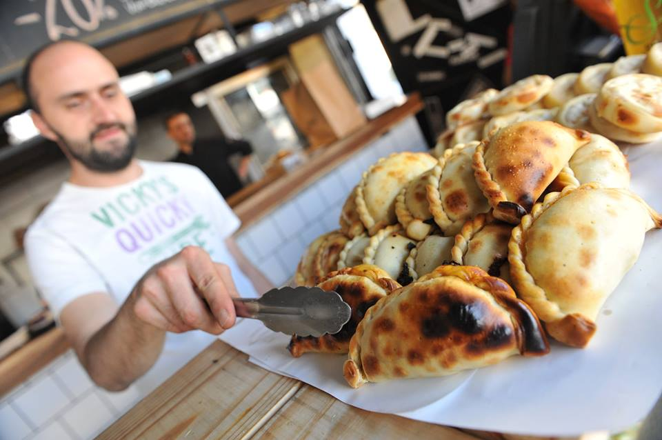
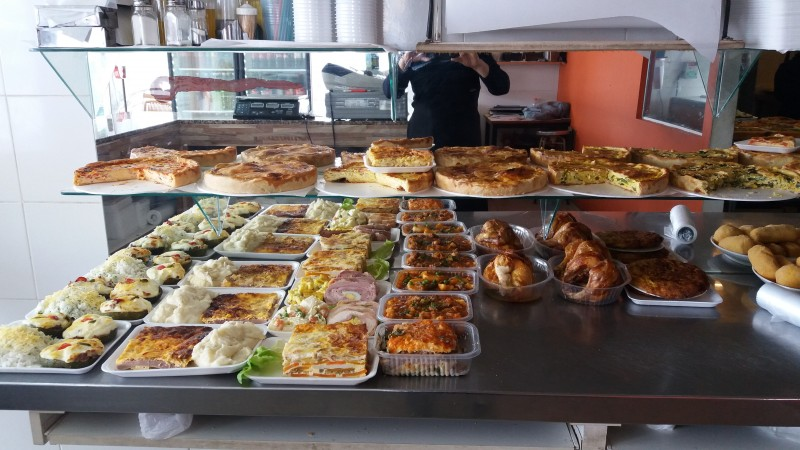

Sobre nosotros

Hace ocho años, en el corazón de Fontana, Chaco, nació una rotisería que con el tiempo se convirtió en un punto de encuentro para vecinos y familias.
Lo que comenzó como un pequeño emprendimiento familiar, con recetas tradicionales y mucho esfuerzo, hoy es un lugar reconocido por el sabor casero y la atención cálida que caracteriza a su gente.
Desde el primer día, la misión fue clara: ofrecer comidas frescas, abundantes y a precios accesibles, respetando los gustos de la comunidad. Con el aroma tentador de las empanadas recién salidas del horno, los pollos a la parrilla dorados a fuego lento y las clásicas milanesas que nunca faltan en la mesa chaqueña, la rotisería logró conquistar el paladar y el corazón de sus clientes.
Durante estos ocho años, la confianza y el cariño de los vecinos fueron el motor que mantuvo viva la pasión por cocinar. Cada día, el local abre sus puertas con la misma ilusión del primer día, sabiendo que detrás de cada pedido hay una familia, un almuerzo compartido o una cena especial que merece ser disfrutada.
Hoy, esta rotisería no solo es un comercio: es parte de la historia de Fontana, un espacio donde la tradición, el trabajo y el sabor se encuentran. Y mientras los hornos siguen encendidos y las recetas caseras se mantienen intactas, el compromiso con la comunidad sigue siendo el mismo: brindar siempre lo mejor.
